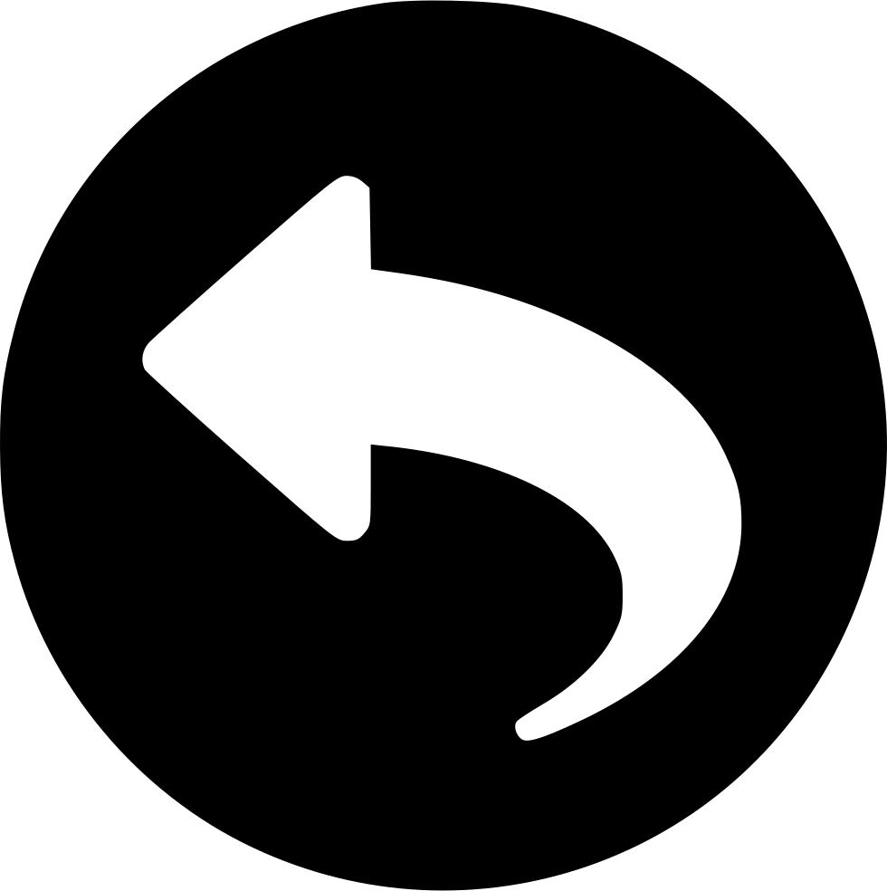

De ce am nevoie?

back
Pentru a începe drumul spre o fotografie reuşită, ai nevoie de un aparat pe gustul tău.
Există trei mari tipuri de aparate foto importante.
Aparate foto compacte
Aparate foto DSLR
Aparate foto mirrorless